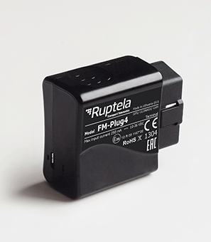

FM-Plug4 es un localizador OBD personal fácil de instalar. Se ha diseñado para realizar el seguimiento y la supervisión de los vehículos, proteger el vehículo contra robos y leer los códigos de error del motor OBD-II.

Funciones de FM-Plug4
• Lectura de códigos de error del motor OBD II
• Supervisión del comportamiento del conductor (Eco-Drive)
• Zonas geográficas internas
• Funciones diversas mediante SMS
El dispositivo tiene un protocolo de instalación Plug & Play, por lo que no hay necesidad de contratar o formar a los instaladores y se ahorra los costes adicionales de la instalación. Gracias a una instalación fácil y rápida, no será necesario apartar el vehículo de su actividad para instalar el dispositivo.
La posibilidad de preconfigurar FM-Plug4+ con una tarjeta SIM y de vender e instalar este dispositivo sin tener conocimientos específicos, lo convierte en un producto muy apto para la venta directa al cliente final a través de los canales masivos.
FM-Plug4+ es un localizador personal que se puede asignar a una sola persona. Por lo tanto, si la empresa tiene menos vehículos que conductores o si el vehículo está en el taller, el seguimiento funcionará sin interrupciones dado que se puede pasar fácilmente de un vehículo a otro.
Si se produce el robo del vehículo, se desmonta el dispositivo o el vehículo sale de las zonas geográficas establecidas, el propietario recibirá una alerta. Además, el micrófono interno permite escuchar lo que está sucediendo en el vehículo y protegerlo todavía más. Recibirá la misma alerta si arrastran el vehículo, de modo que el propietario podrá reaccionar de forma inmediata.
FM-Plug4+ puede leer códigos de error del motor OBD-II y diagnosticar los errores del vehículo sin someterlo a costosas pruebas. Ahorra tiempo y ayuda a evitar las averías del vehículo.
Estamos dispuestos a darle la mejor respuesta en la solución para su negocio. Teléfono: (511)610-0261